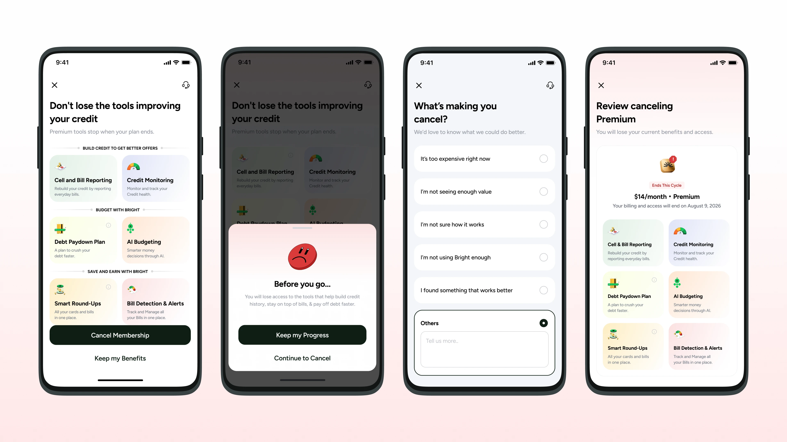
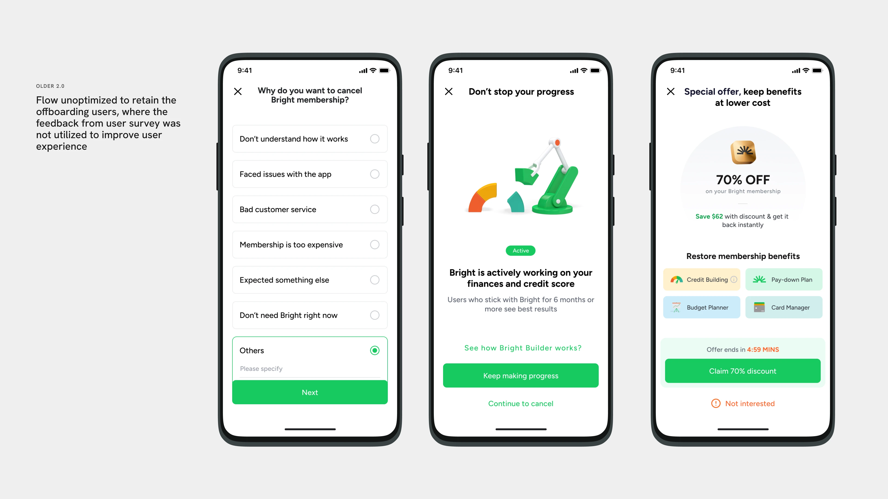
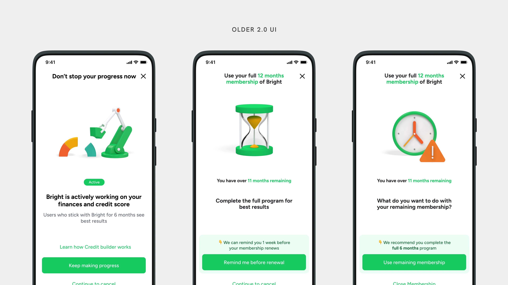
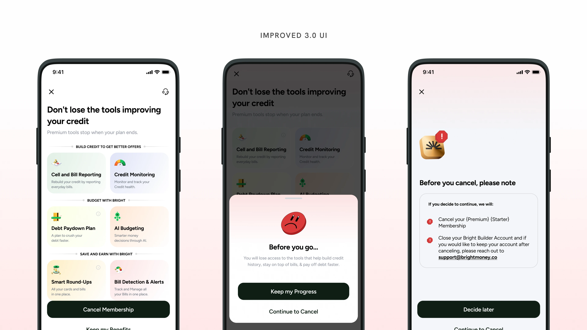
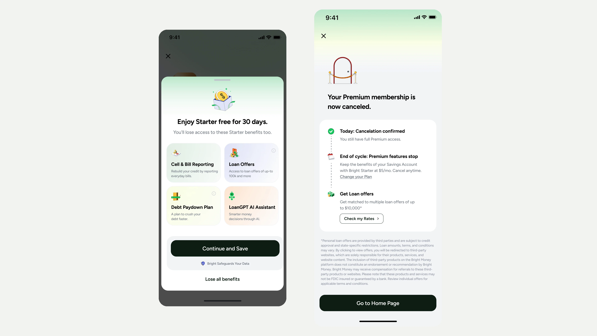
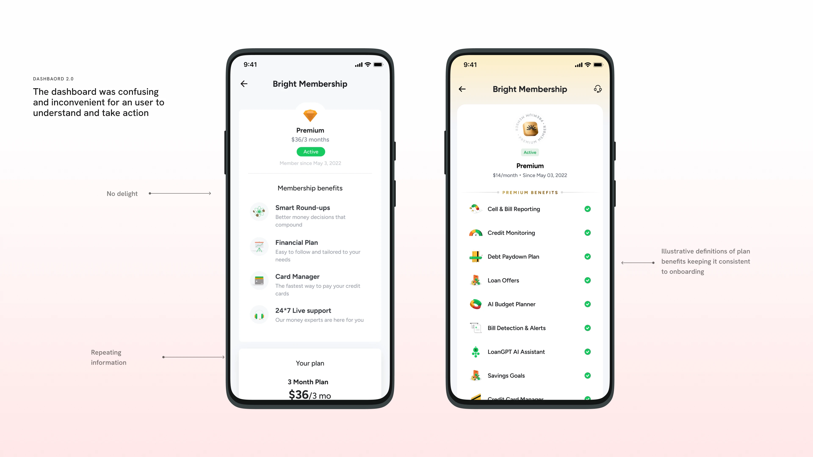
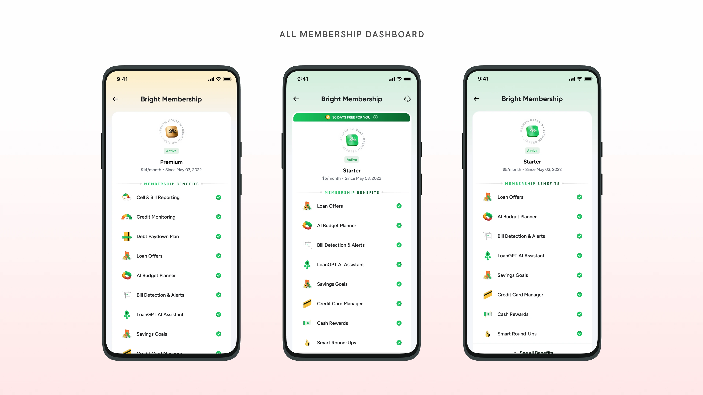
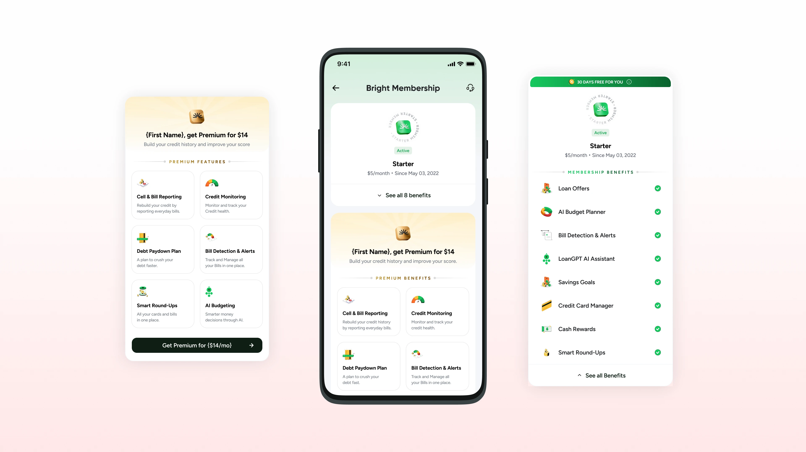
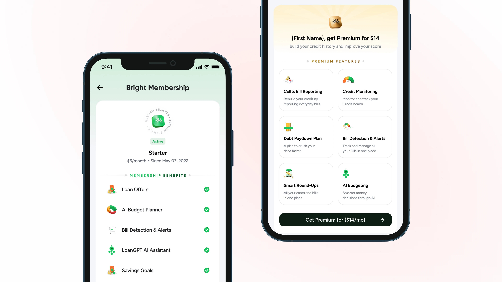

Monet Cancellation
Building a split offboarding funnel to ensure users can get the most before they decide to cancel.

Overview
Giving user more options than before covering all open ends of the current membership.
Problem
Bright ran two tiers: Premium or nothing. A user who cancelled went to $0, with no middle.
My part
Product design, project management and handoff for the cancellation flow, from the offer timing to the seven account states behind it.
Where it landed
The Premium cancellation flow is closed and signed off. The Starter flow had feedback implemented and a final review pending.
Context
Monet is where every subscription decision happens.
Monet is Bright's monetization surface. It covers every screen a user touches when they subscribe, manage their plan or cancel. I was part of this project across its phases, taking the cancellation flow through design, project management and handoff.
Problem
Cancelling meant losing the user completely.
Bright had Premium or nothing. The new Starter tier was a way to stay in the product at a price a leaving user might accept.
- Premium · $14 / moFull subscription. All features unlocked.
- Starter (new) · $5 / moCash advance, credit features, and Rent Reporting as an add-on. A way to stay in the product.
- Basic · $0Cancelled. Limited access.
Two user groups needed designing for: existing users migrated to Starter automatically with a 30-day grace period, and Premium users actively cancelling who needed to see the $5 offer.

Older 2.0: the flow did not use the feedback from the user survey to retain users who were leaving.

Older 2.0 UI.
Redesign
The 3.0 flow shows what leaving costs.
The 2.0 flow asked why the user wanted to leave, then offered a discount, without using the survey answers. The 3.0 flow opens on the premium tools the user is about to lose, adds a confirmation sheet, asks what is making them cancel, and ends on a review of the benefits and the date access ends.

Improved 3.0 UI.
The 3.0 flow, end to end.
Decision
When to show the offer.
Netflix shows you a cheaper plan before you cancel. Audible does the same. The mid-flow downsell is a proven pattern, but it only works if the offer is genuinely strong.
I designed multiple flow variants. Variant 1 had stronger visuals. Variant 2 put the $5 offer at the right moment in the flow. We aligned on Variant 2 for the first test, not because it looked better on screen, but because it gave users the information at the moment it was actually useful.

The Starter offer. Left: the offer sheet, Enjoy Starter free for 30 days, with Continue and Save. Right: the post-cancellation screen, which keeps Starter at $5/mo.
Constraints
The compliance layer.
Every screen in Monet touches compliance, and cancellation screens even more so. These were not copy notes. Getting them wrong on a cancellation screen is a legal exposure.
Complexity
The hardest part was the number of states, not the flow.
A single user could be in seven distinct states, each with different copy, different calls to action and different settings screens. I mapped every one and designed them all.
- MigratedIn the notice period.
- MigratedIn the grace period.
- MigratedOnce billing started.
- PremiumCancelled.
- StarterForce opt-in.
- StarterExplicit opt-in.
- BasicLimited access.

Dashboard 2.0 was confusing and inconvenient to understand and act on. Annotated: no delight, repeating information.

All membership dashboard states: Premium, Starter with 30 days free, Starter.

Starter dashboard, with the Premium upsell and the Starter benefits.

Starter dashboard and the Premium upsell, up close.
Where it landed
One flow signed off, one in final review.
The Premium cancellation flow is closed and signed off. The Starter cancellation flow had feedback implemented, with final review pending at handoff. The full settings states and wireframe set were delivered and are with engineering.
No results are reported here yet, because the flow had not been through a live test at handoff.
Takeaways
What I would do differently.
- Map all user states before touching the design. Seven states across three user types is a known complexity for a tiered subscription product. I found the full scope through iteration instead of up front.
- Get data before locking the offer timing. The mid-flow versus post-cancellation decision needed data I did not have. I would push for prior A/B test results from a comparable product first. We chose right based on reasoning, but data would have made it faster.